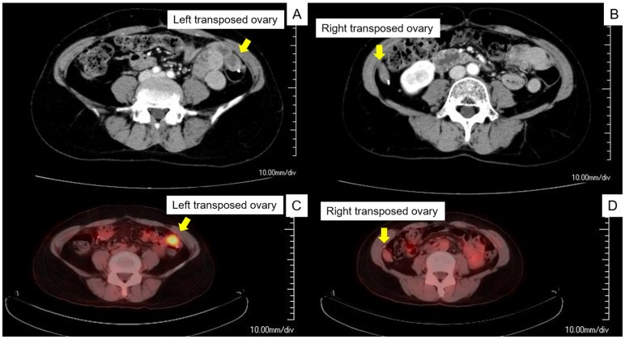
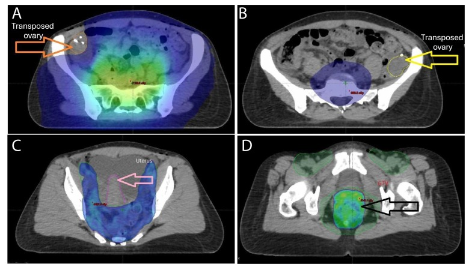

1607 — Bảo tồn sinh sản trước hóa–xạ trị: dự trữ buồng trứng, ngưỡng liều xạ & buồng trứng chuyển vị trên CT / Fertility preservation before gonadotoxic therapy
Tags: pattern:buong-trung-chuyen-vi-tri pattern:giam-du-tru-buong-trung vung:buong-trung vung:tieu-khung score:AMH-AFC protocol:TVUS protocol:MRI-chau protocol:CT-xa-tri protocol:bao-ton-sinh-san
Mức chắc chắn (certainty): tổng hợp y văn (literature synthesis) — ESHRE 2020 (PMC7666361), tổng quan chuyển vị buồng trứng 2026 (PMC13103583), ca nguyên văn tái phát tại buồng trứng chuyển vị (PMC9600108).
Câu chốt: bảo tồn sinh sản là quyết định trước khi bắt đầu thuốc/xạ — không phải việc làm sau. Với bác sĩ CĐHA, hai câu hỏi thực hành là: (1) buồng trứng còn bao nhiêu dự trữ (AFC/thể tích)? và (2) buồng trứng đã được chuyển vị nằm ở đâu, có ra khỏi trường xạ không, và khối ở vị trí đó là buồng trứng — hay tái phát?
1. Tổng quan bệnh học – cơ chế hình ảnh
- Vì sao phải quyết định sớm: noãn (oocyte) là tế bào không tái sinh; hóa chất alkyl hóa và tia xạ phá nang nguyên thủy (primordial follicle) theo liều tích lũy. Mất dự trữ → suy buồng trứng sớm (premature ovarian insufficiency — POI): vô sinh, giảm mật độ xương, tăng nguy cơ tim mạch, rối loạn tình dục. Cửa sổ can thiệp là 1–2 tuần trước khi bắt đầu điều trị (kích thích buồng trứng khởi đầu bất kỳ pha nào — "random-start").
- Ngưỡng liều xạ (định lượng, theo Wallace 2005 qua PMC13103583): ở phụ nữ < 40 tuổi, liều < 2 Gy có thể làm thoái hóa 50% noãn; 14 Gy gây suy buồng trứng hoàn toàn. Đây là cơ sở để đặt buồng trứng ra ngoài trường xạ, không phải "xa vừa đủ".
- Ngưỡng vị trí chuyển vị (bắt buộc nhớ): buồng trứng phải cách ≥ 4 cm mép trường xạ hoặc ≥ 1,5 cm trên mào chậu (iliac crest). Vị trí thường dùng: rãnh cạnh đại tràng (paracolic gutter), thành bụng trước 3–4 cm trên rốn, hoặc cao tới góc gan/lách.
- Hiệu quả chuyển vị (định lượng): tỷ lệ giữ chức năng buồng trứng dao động 15–100%; ung thư cổ tử cung 50–65%; xạ ngoài ± brachy 65% (KTC 95% 56–74); hóa–xạ đồng thời 51,1%; chỉ brachy ~90% (PMC13103583).
- Nguy cơ ung thư buồng trứng tại chỗ chuyển vị: 0,36% chung; 1,46% với ung thư biểu mô vảy, 3,61% với adenocarcinoma cổ tử cung; ung thư trực tràng/hậu môn 1–8% → không chuyển vị khi nguy cơ di căn buồng trứng cao (PMC13103583).
- Ngưỡng dự trữ để chọn kỹ thuật: không đề nghị trữ mô buồng trứng (OTC) khi AMH < 0,5 ng/mL và AFC < 5**, hoặc **> 36 tuổi (hiệu quả thấp) (ESHRE 2020, PMC7666361).
- TẠI SAO hình ảnh quan trọng — vật lý:
- Siêu âm đầu dò âm đạo (TVUS): đếm nang noãn thứ cấp (antral follicle count — AFC) là nang 2–10 mm ở cả hai buồng trứng; AFC và AMH là hai test dự trữ được ESHRE khuyến cáo hơn các test khác. Thể tích buồng trứng (dài × rộng × cao × 0,523) là số đo phụ.
- CT: sau chuyển vị, buồng trứng là nốt mô mềm 20–40 HU ở vị trí bất thường; clip phẫu thuật ở bờ dưới là dấu định vị (được đặt đúng vì mục đích này). Dao động theo chu kỳ (nang noãn) làm kích thước thay đổi giữa các lần chụp.
- MRI: vỏ/stroma buồng trứng T2 trung gian–sáng, nang noãn T2 rất sáng; mô đặc của buồng trứng hạn chế khuếch tán nhẹ (stroma giàu tế bào) — đừng nhầm với u ác; u ác thường ADC thấp hơn rõ và có thành phần đặc.
- PET/CT: buồng trứng bình thường có thể ngấm FDG sinh lý (hoạt động nang/noãn) → dương tính giả; ngược lại tái phát tại buồng trứng chuyển vị có thật và được chẩn đoán chính bằng PET/CT trong ca nguyên văn.
2. Mẫu hình + chẩn đoán phân biệt theo vị trí (Gamut)
- Khuôn 1 — nốt mô mềm ở rãnh cạnh đại tràng/mào chậu ở người đã mổ ung thư phụ khoa: buồng trứng chuyển vị (có clip, hình thay đổi theo chu kỳ) vs hạch (bầu dục, rốn mỡ, dọc mạch) vs mảng phúc mạc/tái phát (không clip, bờ không đều, ngấm mạnh) vs u buồng trứng tại chỗ chuyển vị (to nhanh, thành phần đặc).
- Khuôn 2 — buồng trứng to, đau bụng cấp sau chuyển vị: xoắn buồng trứng (ovarian torsion) — buồng trứng to, phù, nang noãn xếp ngoại vi, cuống xoắn ("whirl sign"), không ngấm/ngấm kém; chẩn đoán sớm để giữ buồng trứng.
- Khuôn 3 — nang đơn thuần sau chuyển vị: nang chức năng; đa số theo dõi, chỉ 21,6% nang có triệu chứng phải mổ, phần còn lại điều trị nội khoa (OCP/giảm đau) (PMC13103583).
- Khuôn 4 — buồng trứng nhỏ, không thấy nang: giảm dự trữ/POI sau điều trị; đối chiếu AMH/FSH, không dùng hình ảnh đơn thuần để kết luận khả năng sinh sản.
- Gamut theo vị trí chuyển vị: rãnh cạnh đại tràng (phổ biến), thành bụng trước trên rốn, góc gan/lách (xa trường xạ nhất nhưng nguy cơ xoắn/di chuyển cao hơn), sau phúc mạc (kỹ thuật bóc tách rộng).
- Gamut theo thời điểm: trước xạ — đánh giá dự trữ + lập kế hoạch; trong 6 tháng đầu — nang chức năng, xoắn; sau nhiều năm — tái phát tại buồng trứng chuyển vị (9 ca trong y văn, 4/9 tử vong trong 2 năm sau mổ lần hai — PMC9600108).
3. Bảng so sánh phân biệt (ma trận đối chiếu)
| Thực thể (entity) | Hình ảnh điển hình | Chốt vào (rule-in) | Chốt loại (rule-out) | Gợi ý xác nhận |
|---|---|---|---|---|
| Buồng trứng chuyển vị (bình thường) | Nốt mô mềm 20–40 HU ở rãnh cạnh đại tràng/thành bụng, clip ở bờ dưới, kích thước đổi theo chu kỳ; T2 có nang sáng | Clip + vị trí điển hình + thay đổi theo chu kỳ | Bờ không đều, không clip, to nhanh → nghi tái phát | So phim cũ, TVUS xác nhận nang noãn |
| Tái phát tại buồng trứng chuyển vị | Khối to ra, thành phần đặc, ngấm mạnh, FDG dương; có thể đơn độc không di căn khác | To nhanh + đặc + FDG dương ở đúng vị trí chuyển vị | Ổn định nhiều năm, chỉ nang → lành | PET/CT + sinh thiết/cắt buồng trứng |
| Hạch chậu/paraaortic | Bầu dục, rốn mỡ, dọc chuỗi mạch, ngấm đồng nhất | Rốn mỡ + dọc mạch + bờ đều | Có clip + vị trí ngoài chuỗi hạch → buồng trứng | So chuỗi hạch, theo dõi kích thước |
| Xoắn buồng trứng | Buồng trứng to, phù, nang xếp ngoại vi, cuống xoắn, ngấm kém | Whirl sign + nang ngoại vi + ngấm kém | Ngấm bình thường, không cuống xoắn → không xoắn | Doppler (không nhạy), mổ nội soi khi nghi |
| Nang chức năng sau chuyển vị | Nang đơn thuần, thành mỏng, dịch đồng nhất, không thành phần đặc | Thành mỏng + dịch đồng nhất + có nang noãn bên cạnh | Thành dày/nhú/đặc → nghi u | Theo dõi 6–8 tuần, TVUS |
| Giảm dự trữ/POI | Buồng trứng nhỏ, ít/không nang 2–10 mm, AMH thấp | AFC thấp + AMH thấp + FSH cao | AFC bình thường → dự trữ còn | AMH/AFC trước và sau điều trị |

*(A,B) CT có cản quang: buồng trứng chuyển vị nằm ở rãnh cạnh đại tràng hai bên (mũi tên vàng) — vị trí "giả hạch". (C,D) PET/CT cùng ca: ngấm FDG tại buồng trứng chuyển vị = tái phát, đã xác nhận bằng mổ nội soi. Nguồn: Maeda M et al., Curr Oncol 2022, PMC9600108, CC BY 4.0.*Dấu hiệu chốt cần nhớ
- Clip ở bờ dưới buồng trứng là "chữ ký" của chuyển vị — tìm clip trước khi gọi hạch.
- Vị trí ≥ 4 cm ngoài trường xạ hoặc ≥ 1,5 cm trên mào chậu — dùng để đọc kế hoạch xạ, không ước lượng bằng mắt.
- FDG ở buồng trứng = sinh lý hoặc tái phát — không kết luận nếu không có hình thái (đặc/to nhanh) và mô học.
- AFC đếm nang 2–10 mm, không đếm nang lớn/cyst.
4. Protocol chụp + hệ phân độ/điểm chuẩn hóa
- Trước điều trị (trong 1–2 tuần):
- TVUS ngày 2–5 chu kỳ (hoặc bất kỳ ngày nếu cấp): đếm AFC hai bên (nang 2–10 mm), đo thể tích buồng trứng, loại trừ u/nang bất thường; AMH cùng ngày.
- Đánh dấu clip ở bờ dưới buồng trứng khi mổ chuyển vị (giúp định vị trên CT về sau).
- CT lập kế hoạch xạ (RT planning CT): vẽ contour buồng trứng, tính liều trung bình/thể tích nhận liều (V2 Gy, V5 Gy); mục tiêu đưa buồng trứng ra ≥ 4 cm khỏi mép trường hoặc ≥ 1,5 cm trên mào chậu.
- Sau điều trị: TVUS + AMH theo lịch (3–6 tháng/lần trong 2 năm đầu nếu muốn theo dõi dự trữ); CT/MRI chậu khi nghi tái phát/triệu chứng; PET/CT chỉ khi có tổn thương nghi ngờ trên CT/MRI hoặc triệu chứng — không tầm soát bằng PET.
- Ngưỡng kỹ thuật: dự đoán liều buồng trứng bằng mô hình kém tin cậy khi buồng trứng cách trường < 17 mm → phải lập kế hoạch thủ công, không dựa mô hình (PMC13612307).
- Chọn phương án (theo ESHRE 2020):
flowchart TD
A[Chẩn đoán ung thư, nữ trong tuổi sinh sản] --> B{Có chỉ định điều trị độc sinh sản?}
B -->|Không| Z[Tư vấn, theo dõi]
B -->|Có| C[TVUS: AFC + thể tích; AMH]
C --> D{Điều trị có thể hoãn 1-2 tuần?}
D -->|Có| E[Trữ noãn chín / trữ phôi - ưu tiên]
D -->|Không hoặc không kích thích được| F{AMH ≥ 0,5 và AFC ≥ 5, tuổi ≤ 36?}
F -->|Có| G[Trữ mô buồng trứng OTC]
F -->|Không| H[Cân nhắc OTC theo ca; tư vấn giới hạn]
C --> I{Có xạ tiểu khung?}
I -->|Có, nguy cơ di căn buồng trứng thấp| J[Chuyển vị buồng trứng + clip; kiểm tra liều]
I -->|Nguy cơ di căn cao| K[Không chuyển vị - tư vấn]
E --> L[GnRH agonist nếu ung thư vú có chỉ định]
G --> L
J --> L
- GnRH agonist: ESHRE khuyến cáo dùng trong ung thư vú tiền mãn kinh có hóa trị như một lựa chọn bảo vệ buồng trứng, nhưng bằng chứng về dự trữ buồng trứng và khả năng có thai còn hạn chế — không thay thế trữ noãn/phôi (PMC7666361).
5. Biến thể bình thường và cạm bẫy
- Cạm bẫy 1 — "khối mô mềm cạnh đại tràng = hạch/tái phát": đó có thể là buồng trứng chuyển vị; tìm clip, so phim cũ, xác nhận bằng TVUS. Gọi nhầm → sinh thiết/hóa trị oan.
- Cạm bẫy 2 — FDG sinh lý: buồng trứng ngấm FDG theo hoạt động nang; không chẩn đoán tái phát chỉ vì PET dương. Ngược lại, tái phát tại buồng trứng chuyển vị có thể đơn độc và bỏ sót nếu chỉ đọc CT (PMC9600108).
- Cạm bẫy 3 — xoắn buồng trứng sau chuyển vị: đau bụng cấp, buồng trứng to; Doppler bình thường không loại trừ; mổ nội soi khi nghi.
- Cạm bẫy 4 — buồng trứng "di chuyển ngược" về tiểu khung: vẫn nằm trong trường xạ → mất tác dụng bảo vệ; kiểm tra vị trí trên CT lập kế hoạch trước khi xạ.
- Cạm bẫy 5 — trữ mô buồng trứng ở nhóm nguy cơ cao: nguy cơ tái nhập tế bào ác tính khi ghép lại; cần đánh giá bệnh tồn dư tối thiểu (MRD)/làm sạch mô, và tư vấn rõ (PMC13459637).
- Cạm bẫy 6 — dùng AMH đơn thuần để hứa hẹn sinh sản: ESHRE nêu rõ AMH trước điều trị không dùng làm chỉ số dự báo khả năng sinh sản sau điều trị; phải tư vấn theo tuổi + phác đồ + liều.
6. Tự lượng giá — Blind Quiz
Ca 1 — Nữ 32 tuổi, ung thư cổ tử cung IB1, đã mổ + chuyển vị buồng trứng, đang lập kế hoạch xạ. Ảnh CT lập kế hoạch có isodose:

- Câu hỏi: Buồng trứng nào nằm trong vùng liều? Có đạt khoảng cách an toàn không? Nếu không, xử trí?
Bấm để hiện đáp án (findings + chẩn đoán)
- Dấu hiệu: (A) isodose 500 cGy (xanh) áp sát buồng trứng chuyển vị bên phải; (B) buồng trứng trái nằm ngoài isodose. (C) tử cung; (D) isodose 4.200 cGy phủ vùng hạch nguy cơ.
- Kết luận: buồng trứng phải không đạt khoảng cách an toàn — cần chỉnh kế hoạch/chuyển vị cao hơn (mục tiêu ≥ 4 cm ngoài trường hoặc ≥ 1,5 cm trên mào chậu, theo PMC13103583), trước khi bắt đầu xạ.
- Nguồn ảnh: Dillard V et al., F&S Reports 2025, PMC12223560, CC BY-NC-ND 4.0 (nguyên bản, không chỉnh sửa).
Ca 2 — Nữ 45 tuổi, 3 năm sau mổ + hóa–xạ ung thư cổ tử cung có chuyển vị buồng trứng; đau bụng nhẹ, CA-125 tăng nhẹ. CT và PET/CT:
- Câu hỏi: Hai "khối" ở rãnh cạnh đại tràng là gì? PET dương có đủ chẩn đoán tái phát? Bước tiếp theo?
Bấm để hiện đáp án (findings + chẩn đoán)
- Dấu hiệu: (A,B) buồng trứng chuyển vị hai bên ở rãnh cạnh đại tràng, bên trái hơi to; (C,D) ngấm FDG tại hai buồng trứng.
- Chẩn đoán: tái phát tại buồng trứng chuyển vị — được xác nhận bằng mổ nội soi cắt hai buồng trứng; trong y văn chỉ 9 ca tương tự, 4/9 tử vong trong 2 năm.
- Phản biện: FDG ở buồng trứng có thể sinh lý; ở ca này chốt nhờ hình thái (to, đặc) + bối cảnh + mô học, không chỉ PET.
- Nguồn ảnh: Maeda M et al., Curr Oncol 2022, PMC9600108, CC BY 4.0.
Ca 3 — Nữ 28 tuổi, ung thư vú giai đoạn sớm, cần hóa trị trong 10 ngày; AMH 1,8 ng/mL, AFC 14:
- Câu hỏi: Chọn trữ noãn, trữ phôi, trữ mô buồng trứng hay GnRH agonist? Vì sao?
Bấm để hiện đáp án (findings + chẩn đoán)
- Chọn: trữ noãn chín (hoặc trữ phôi nếu có bạn tình) — khởi động ngay bằng phác đồ đối kháng GnRH, random-start, có thể hoàn tất trong ~2 tuần; GnRH agonist dùng song song trong hóa trị như lựa chọn bảo vệ thêm nhưng không thay thế trữ noãn/phôi (ESHRE 2020).
- Không chọn OTC làm đầu tay: AMH 1,8 và AFC 14 là dự trữ tốt, nhưng OTC chỉ ưu tiên khi không thể trì hoãn/kích thích; hiệu quả OTC đặt dấu hỏi > 36 tuổi và không đề nghị khi AMH < 0,5 + AFC < 5.
- Lưu ý hình ảnh: TVUS đếm AFC ngày 2–5; không dùng AMH đơn thuần để dự báo khả năng sinh sản sau điều trị.
Bài liên quan chéo
- 533 – Theo dõi & bảo tồn sinh sản sau u tế bào mầm buồng trứng
- 530 – Buồng trứng O-RADS trên siêu âm & MRI
- 544 – Đảo ngược tử cung không do sinh
- 582 – Biến chứng tiêu hóa–niệu sau xạ trị phụ khoa
Ảnh
images/1607_buong-trung-chuyen-vi-tri_CT-PET_PMC9600108.jpg(CC BY 4.0),images/1607_OVD-ke-hoach-xa_CT_PMC12223560.jpg(CC BY-NC-ND 4.0, nguyên bản).- Nguồn + giấy phép từng ảnh:
images/CREDITS.md.
Không dùng để chẩn đoán độc lập khi chưa có người hướng dẫn.